Solitaire mit Backbone
Cologne.js
13. November 2012
Paul Wittmann
paul@railslove.com

Live demo
Komponenten
- Ruby on Rails
- CoffeeScript
- Backbone.js
- Backbone Marionette
- Backbone Relational
- HAML Coffee Templates
- HTML5 Drag & Drop API
Architektur
Datenmodell
Backbone Relational
class IG.Models.Column extends Backbone.RelationalModel
relations: [
type: Backbone.HasMany
key: 'cards'
relatedModel: 'IG.Models.Card'
collectionType: 'IG.Collections.Cards'
reverseRelation:
key: 'column'
includeInJSON: '_id'
]
card = IG.columns.first().get('cards').first()
# => BB CardsCollection
card.get('value') # => 1
card.get('column') # => BB Column model instance
Marionette Layout
<!-- server-seitig -->
<body>
<div class='fork-me'></div>
<div id='l-game-container'></div>
</body>
class IG.AppLayout extends Backbone.Marionette.Layout
template: 'layouts/application'
el: '#l-game-container'
regions:
navigation: '#l-header-container--navigation-wrapper'
stack: '#stack'
piles: '#l-piles-container'
content: '#l-content-container'
Marionette Views
Marionette Views
class IG.Views.ColumnsCollection extends Backbone.Marionette.CollectionView
id: 'columns-container'
template: 'columns/collection'
itemViewContainer: '.columns-wrapper'
initialize: ->
@itemView = IG.Views.ColumnsShow
class IG.Views.ColumnsShow extends Backbone.Marionette.Collection
tagName: 'ul'
className: 'm-column'
template: 'columns/show'
initialize: ->
@itemView = IG.Views.CardsShow
Spiel speichern
data = "IG.stack.set(#{JSON.stringify(IG.stack)});
IG.columns.reset(#{JSON.stringify(IG.columns)});
IG.piles.reset(#{JSON.stringify(IG.piles)});"
$('.octet-download')
.attr 'href', "data:text/octet-stream;base64,#{$.base64.encode(data)}"
DOMNodeInserted Hack
// http://davidwalsh.name/detect-node-insertion
insertListener = (event) ->
if event.animationName == 'nodeInserted'
$(event.target).removeClass 'off-the-board'
document.addEventListener('animationstart', insertListener, false)
+keyframes(nodeInserted)
from
clip: rect(1px, auto, auto, auto)
to
clip: rect(0px, auto, auto, auto)
.m-column
.m-card
// abusing CSS3 animations to catch event of newly inserted DOM elements
+animation-duration(0.001s)
+animation-name(nodeInserted)
Headline Styles
Railslove's theme features two kinds of headline styles. This is the bubble style.
Marvelous Unordered List
- No order here
- Or here
- Or here
- Or here
Fantastic Ordered List
- One is smaller than...
- Two is smaller than...
- Three!
Transition Styles
You can select from different transitions, like:
Cube -
Page -
Concave -
Zoom -
Linear -
None -
Default
Global State
Set data-state="green" on a slide and "green"
will be added as a class to the document element when the slide is open. This lets you
apply broader style changes, like switching the background and headline styles.
"purple"
Go down to see more states
"orange"
There's one more...
"blue"
Custom Events
Additionally custom events can be triggered on a per slide basis by binding to the data-state name.
Reveal.addEventListener( 'customevent', function() {
console.log( '"customevent" has fired' );
} );
Clever Quotes
These guys come in two forms, inline:
The nice thing about standards is that there are so many to choose from
and block:
For years there has been a theory that millions of monkeys typing at random on millions of typewriters would reproduce the entire works of Shakespeare. The Internet has proven this theory to be untrue.
Pretty Code
function linkify( selector ) {
if( supports3DTransforms ) {
var nodes = document.querySelectorAll( selector );
for( var i = 0, len = nodes.length; i < len; i++ ) {
var node = nodes[i];
if( !node.className ) ) {
node.className += ' roll';
}
};
}
}
Courtesy of highlight.js.
Intergalactic Interconnections
You can link between slides internally, like this.
Fragmented Views
Hit the next arrow...
... to step through ...
any type- of view
- fragments
Export to PDF
Presentations can be exported to PDF, below is an example that's been uploaded to SlideShare.
Take a Moment
Press b or period on your keyboard to enter the 'paused' mode. This mode is helpful when you want to take disctracting slides off the screen during a presentation.